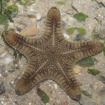
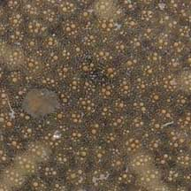
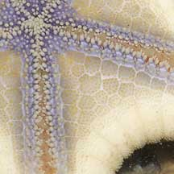
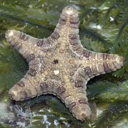
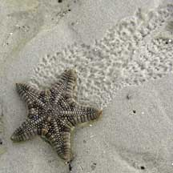
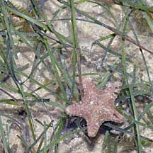
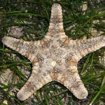
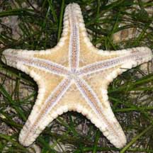

|
|
|
Biscuit
sea star
Goniodiscaster scaber
Family Oreasteridae
updated
Jan 14
Where
seen?
This thick, neatly shaped sea star does indeed look like a biscuit
in shape and colour! It is often seen on our Northern shores, larger
adults on rubble, smaller ones and tiny juveniles among seagrasses,
usually alone or widely spaced apart. There are times, however, when
large numbers of this sea star are seen.
Features: Diameter with arms 5-15cm,
sometimes really small ones about 2-3cm are seen. Body flat but thick.
Almost always five arms, rather short with rounded tips and smooth
sides (no spines) so that the sea star looks like it was cut out with
a cookie-cutter! The upper side has a neat texture of rounded bumps.
Colours of the upper side generally shades of brown, with regular,
neat patterns of spots and bars in darker brown, yellow, orange or
white. Patterns may vary among individuals. The underside is pale
to white, larger ones be darker in the centre with bluish edges along
the grooves where the orange tube feet emerge. The tube feet are tipped
with suckers. It does not have large bivalved pedicellariae (pincer-like
structures) on its underside or upper side.
What does it eat? These sea stars
have been observed clasping coral rubble coated with encrusting animals.
They may be feeding on these organisms. We don't really know for sure.
Sometimes confused with the Spiny
sea star (Gymnanthenea laevis) and the Cake
sea star (Anthenea aspera). Here's more on how
to tell apart large sea stars seen on our shores. |

Tuas, Jun 05

Upperside.
|
|
|

Does not have large bivalved pedicellaria. |
|

Chek Jawa, Jun 05 |

Chek Jawa,
Jul 03 |

Changi, Oct 10 |
Biscuit
sea stars on Singapore shores
| Sightings shared by others: |

Cyrene Reef, Nov 08

Photo shared by Loh Kok Sheng on his
blog. |
|
|
|
Links
References
- Lane, David
J.W. and Didier Vandenspiegel. 2003. A
Guide to Sea Stars and Other Echinoderms of Singapore.
Singapore Science Centre. 187pp.
- Coleman,
Neville. 2007. Sea
stars: Echinoderms of Asia/Indo-Pacific. Neville Coleman's
Underwater Geographic Pty Ltd, Australia.136pp.
|
|
|
|